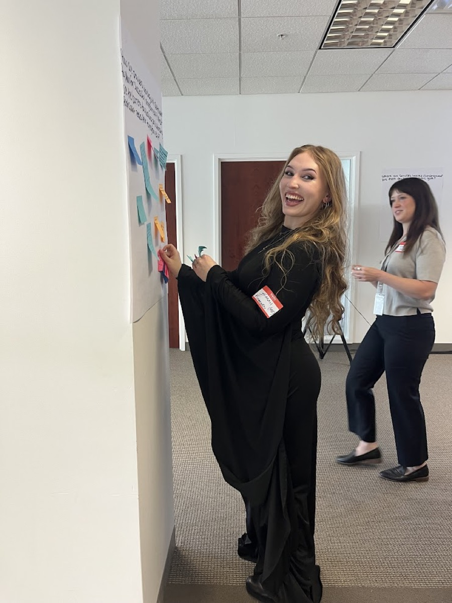
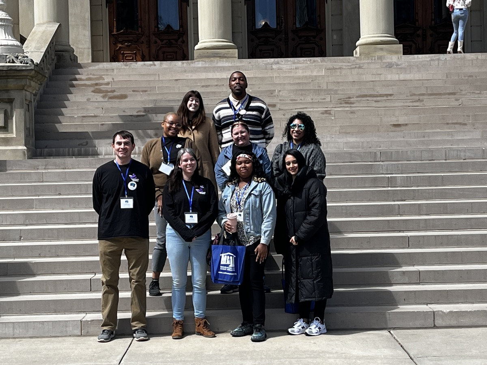
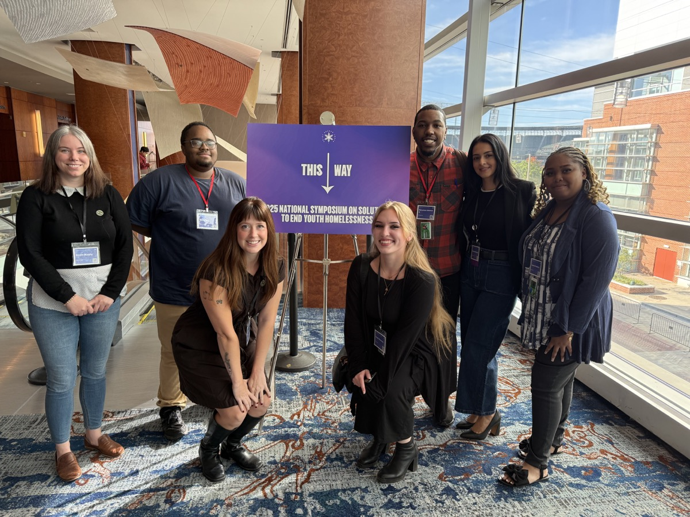
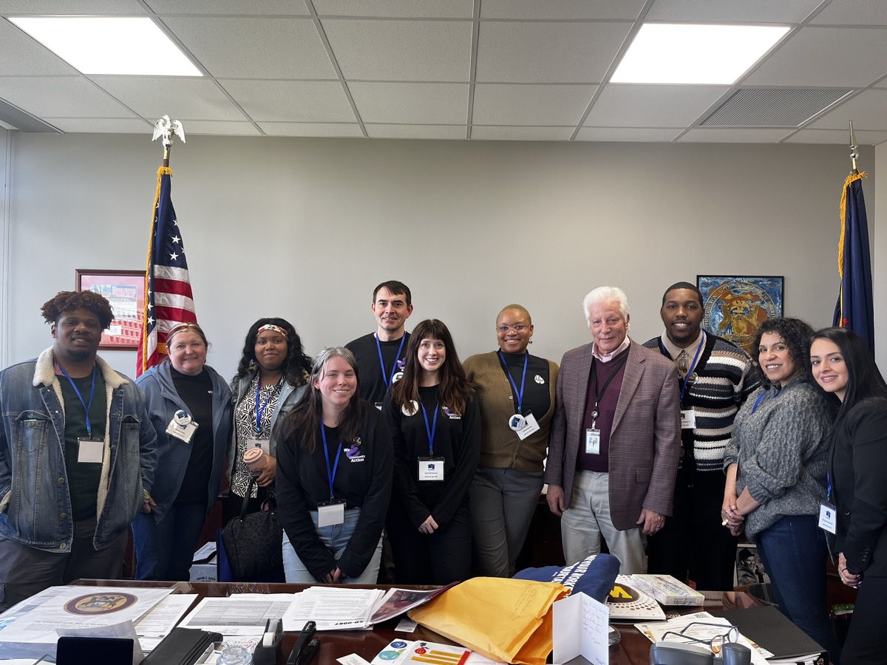
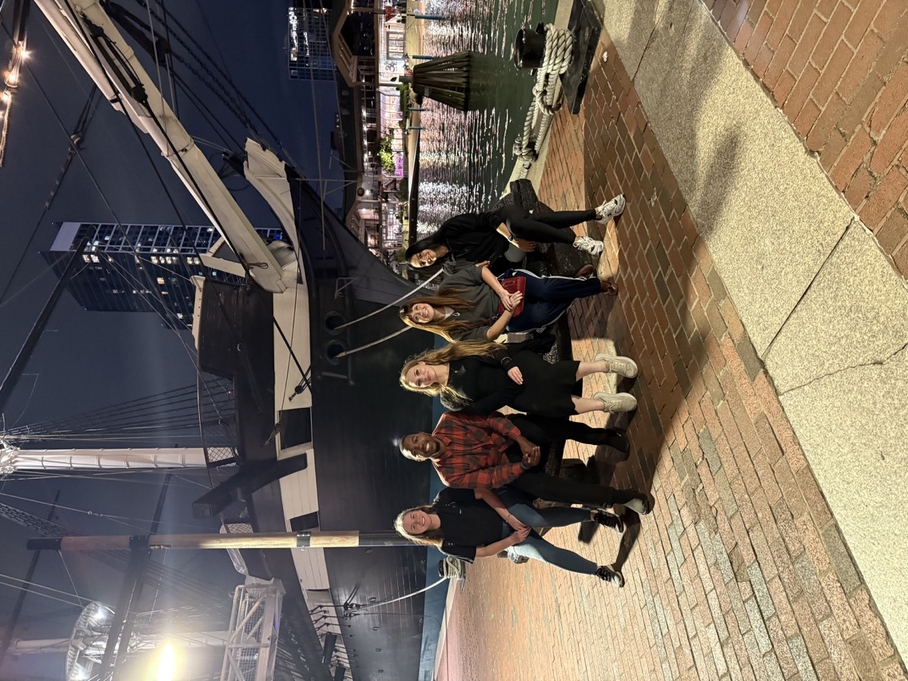

Our Mission
Critical community resources should be visible, accessible, and easy to navigate, especially for young people experiencing housing instability, food insecurity, health challenges, or crisis situations.
A young person in crisis should never have to wonder where to turn. Whether you need a meal tonight, a place to sleep, a doctor who accepts your insurance, or a lawyer who can help with your situation, this site was designed to get you there without the barrier of a lack of centralized directory.
Our Approach
How we think about this work
User-Centered Design
Every design decision is made with the most vulnerable user in mind - someone who may be in crisis, on a low-data phone, or unfamiliar with navigating social services.
Verified Data
Each resource is manually reviewed and includes a "last verified" date so you know how current the information is. We aim to verify all entries quarterly.
Free & Open
This site is entirely free to use. There are no accounts, no ads, and no tracking. Our data is open and available for download.
Community-Powered
We rely on community members, social workers, and organizations to keep our data accurate. If you know of a resource we're missing, let us know.
Accessibility First
This site is designed to WCAG standards - keyboard navigable, screen-reader compatible, high contrast, and fast on slow connections.
Local Focus
We focus on Wayne and Monroe counties with plans to expand. Local focus means better data quality and more meaningful community relationships.
Coverage Area
The Connect currently covers resources in Wayne County and Monroe County, Michigan. This includes communities such as:
- Detroit
- Dearborn
- Westland
- Livonia
- Ypsilanti
- Monroe
- Downriver communities
- And more…
We plan to expand our geographic coverage over time. If you represent an organization in a neighboring county, reach out to discuss partnership.
Transparency & Data Practices
- No personal data collected. We do not collect visitor information.
- Open data. All resource data is available for download on the Data & Reports page.
- Verification dates. Every resource shows when it was last verified.
- Community edits welcome. Use the contact form to suggest corrections or new resources.
- No commercial relationships. We do not accept payment for resource listings.
Our Team in Action
Advocating, connecting, and building community across Southeast Michigan





Youth Advisory Boards
Youth-led leadership shaping the future of homelessness response in Southeast Michigan
Out-Wayne YAB
Purpose
The purpose of the Out-Wayne YAB is to provide an intersectional lens that ensures all Youth Homelessness Systems Improvement (YHSI) programming is affirming, youth centered, and effectively addresses service gaps and systemic barriers to ending youth homelessness.
Mission
Fostering community, advocacy, and awareness for youth homelessness resource allocation through identifying root causes and implementing permanent solutions.
Vision
A future where youth homelessness is eradicated through community-driven, youth-empowered solutions and equitable resource allocation.
Core Values
Our work is guided by inclusivity, equity, empathy, trauma informed collaboration, and accountability to advocate for sustainable development of the youth homelessness response.
Regional YAB
Mission
We're here to do more than share stories, we're here to create change. Our mission is to turn lived experience into leadership, using our voices to push systems toward real solutions. We're fighting for a world where every young person has what they need to grow, not just survive; because housing isn't a reward, it's a right.
Vision
We see a future where no young person has to wonder where they'll sleep at night. A future where support comes early, where resources are fair, and where youth are part of the decisions that shape their lives. We're not waiting on change, we're leading it, one story, one solution, one voice at a time.
Values
The Regional Board abides by the following standards and principles:
- Real Voices
- Respect
- Community
- Experience = Power
- Growth
- Trust
- Creativity
- Equality
- Unity
Ready to Find Help?
Browse all resources or jump straight to the category you need.